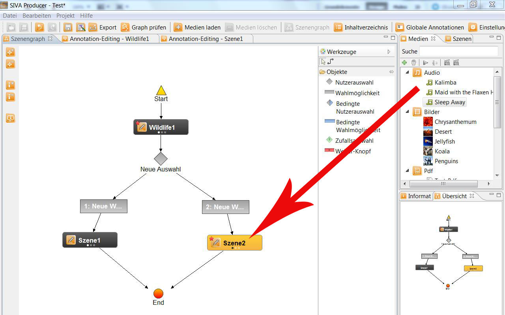

Erstellen von Audio-Annotationen
Eine Audio-Annotation kann nicht bearbeitet werden. Sie kann nachdem sie ins Medien-Repository
geladen wurde via Drag and Drop auf eine Szene im Szenengraphen gezogen werden.

oder im Annotationseditor als neue Annotation mittels
 hinzugefügt werden.
hinzugefügt werden.

Nun können Start- und Endzeitpunkt der Wiedergabe festgelegt und ein Name für die Annotation ausgewählt
werden. Außerdem können weitere Einstellungen für die Wiedergabe der Audiodatei aktiviert oder deaktiviert werden.